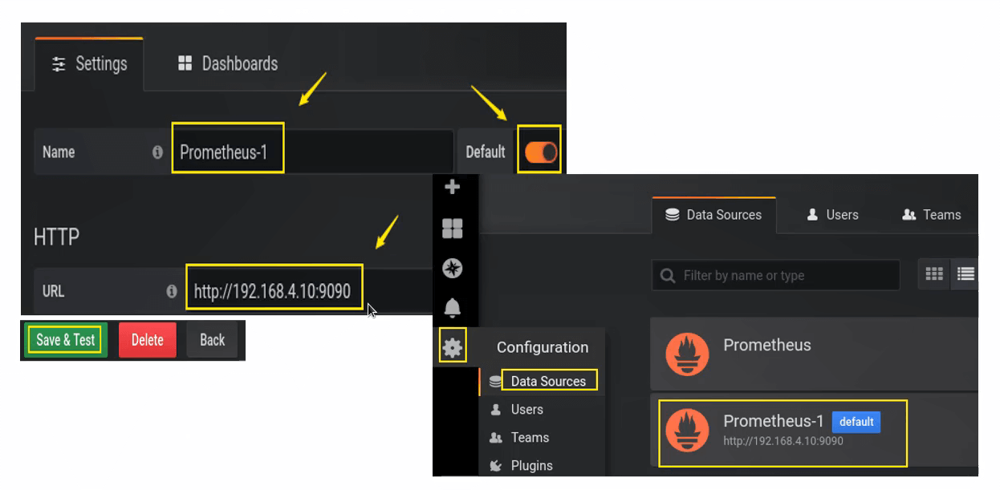
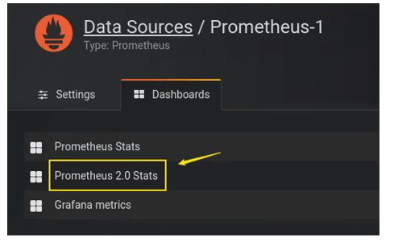
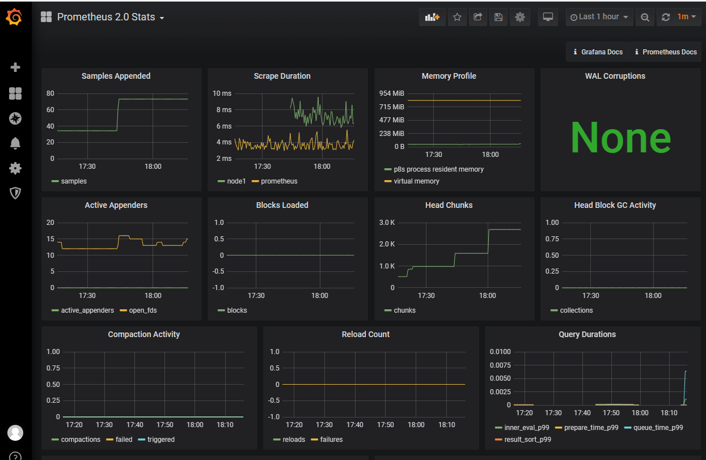
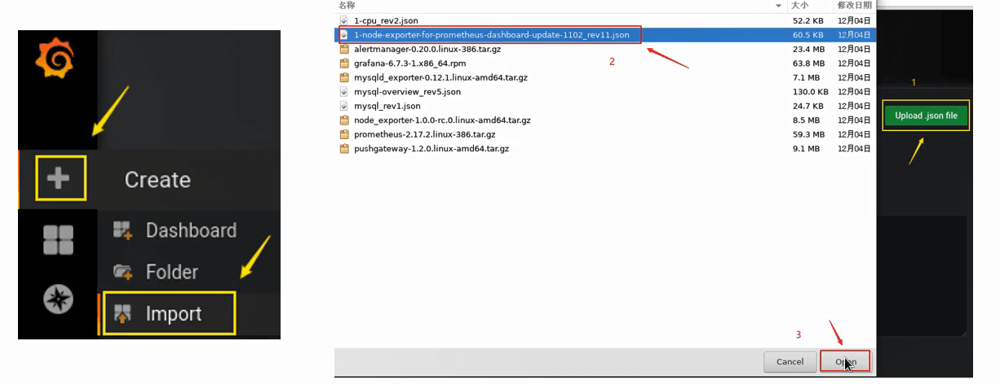
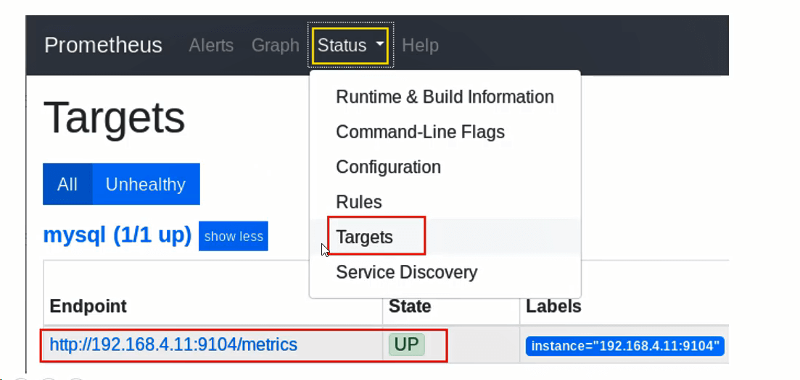
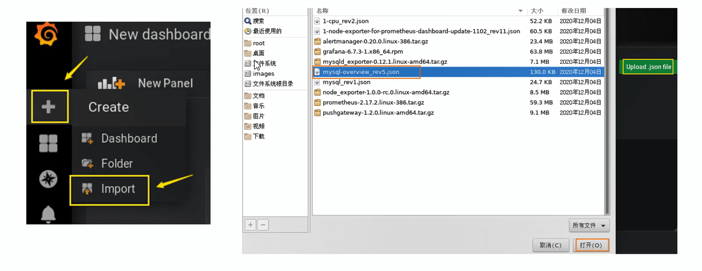

环境准备
| 主机名 |
ip地址 |
| Prometheus |
192.168.4.10 |
| node1 |
192.168.4.11 |
1
2
3
4
5
6
7
8
9
10
11
12
13
14
15
16
17
18
19
| [root@promethues ~]# setenforce 0
[root@promethues ~]# systemctl disable --now firewalld
[root@promethues ~]# rm -rf /etc/yum.repos.d/CentOS-*
[root@promethues ~]# mkdir /opt/centos
[root@promethues ~]# mount /dev/sr0 /opt/centos/
mount: /dev/sr0 写保护，将以只读方式挂载
[root@promethues ~]# vi /etc/yum.repos.d/local.repo
[centos]
name=centos
baseurl=file:///opt/centos
gpgcheck=0
[root@promethues ~]# echo "192.168.4.10 promethues
192.168.4.11 node1" >> /etc/hosts
[root@promethues ~]# echo "/dev/sr0 /opt/centos iso9660 defaults 0 0" >> /etc/fstab
[root@promethues ~]# sed -i "s/SELINUX=enforcing/SELINUX=disabled/g" /etc/selinux/config
|
Prometheus服务器
概述
Prometheus是由SoundCloud开源的监控报警解决方案
采用Go语言开发
Prometheus存储的是时序数据（时序数据库）
数据带时间标签
如<metric name>{<label name>=<label value>, …}
Prometheus主要用在监控容器数据，也可以监控常规主机
Prometheus重视高可用，如果需要100%准确性、那么该软件不适合，
因为它所收集的数据可能不会足够详细和完整
监控拓扑
部署监控服务器
所需软件包下载地址(直接wget加链接下载)
grafana：http://dl.grafana.com/oss/release/grafana-6.7.3-1.x86_64.rpm
mysql_exporter：https://github.com/prometheus/mysqld_exporter/releases/download/v0.12.1/mysqld_exporter-0.12.1.linux-amd64.tar.gz
node_exporter：https://github.com/prometheus/node_exporter/releases/download/v1.0.0-rc.0/node_exporter-1.0.0-rc.0.linux-amd64.tar.gz
pushgateway：https://github.com/prometheus/pushgateway/releases/download/v1.2.0/pushgateway-1.2.0.linux-amd64.tar.gz
prometheus：https://github.com/prometheus/prometheus/releases/download/v2.17.2/prometheus-2.17.2.linux-386.tar.gz
alertmanager：https://github.com/prometheus/alertmanager/releases/download/v0.20.0/alertmanager-0.20.0.linux-386.tar.gz
1
2
3
4
5
6
7
8
9
10
11
12
13
14
| [root@promethues promethues]# tar xf prometheus-2.17.2.linux-386.tar.gz
[root@promethues promethues]# mv prometheus-2.17.2.linux-386 /usr/local/prometheus
[root@promethues promethues]# ls /usr/local/prometheus/
console_libraries consoles LICENSE NOTICE prometheus prometheus.yml promtool tsdb
# 修改配置文件
[root@promethues ~]# vim /usr/local/prometheus/prometheus.yml
static_configs:
- targets: ['192.168.4.10:9090'] # 修改最后一行
# 检查配置
[root@promethues ~]# /usr/local/prometheus/promtool check config /usr/local/prometheus/prometheus.yml
Checking /usr/local/prometheus/prometheus.yml
SUCCESS: 0 rule files found
|
- 启动服务
- 新建service文件，启动服务（默认端口9090）
1
2
3
4
5
6
7
8
9
10
11
12
13
14
15
16
17
18
19
20
21
22
23
24
25
26
27
28
29
| [root@promethues ~]# vim /usr/lib/systemd/system/prometheus.service
[Unit]
Description=Prometheus Monitoring System
Documentation=Prometheus Monitoring System
[Service]
ExecStart=/usr/local/prometheus/prometheus \
--config.file=/usr/local/prometheus/prometheus.yml
--storage.tsdb.path=/usr/local/prometheus/data/
[Install]
WantedBy=multi-user.target
# 启动服务
[root@promethues ~]# systemctl enable --now prometheus.service
# 查看端口是否开放
[root@promethues ~]# ss -luntp | grep 9090
tcp LISTEN 0 128 :::9090 :::* users:(("prometheus",pid=1598,fd=5))
# 查看服务状态
[root@promethues ~]# systemctl status prometheus.service
● prometheus.service - Prometheus Monitoring System
Loaded: loaded (/usr/lib/systemd/system/prometheus.service; enabled; vendor preset: disabled)
Active: active (running) since 二 2023-07-11 16:40:50 CST; 1min 30s ago
Main PID: 1598 (prometheus)
CGroup: /system.slice/prometheus.service
└─1598 /usr/local/prometheus/prometheus --config.file=/usr/local/prometheus/prometheus.yml
|
prometheus控制台
Prometheus被监控端
监控方式
- Prometheus客户端分为pull和push两种提交数据的方式
- Pull：服务器主动向客户端拉取数据，这样需要客户端安装exporters（导出器）作为守护进程
- Push：客户端需要安装pushgateway插件，然后运维人员用脚本把监控数据组织成键值形式提交给pushgateway，再由它提交给服务端

安装软件
- 创建监控需要单独安装exporter
- 官网有很多exporter（导出器）
1
2
3
4
| [root@node1 ~]# tar xf node_exporter-1.0.0-rc.0.linux-amd64.tar.gz
[root@node1 ~]# mv node_exporter-1.0.0-rc.0.linux-amd64 /usr/local/node_exporter
[root@node1 ~]# ls /usr/local/node_exporter
LICENSE node_exporter NOTICE
|
- 启动服务
- 新建service文件，启动服务，默认端口9100
1
2
3
4
5
6
7
8
9
10
11
12
13
14
15
16
17
18
19
20
21
22
23
24
25
26
27
28
| [root@node1 ~]# vim /usr/lib/systemd/system/node_exporter.service
[Unit]
Description=node_exporter
After=network.target
[Service]
Type=simple
ExecStart=/usr/local/node_exporter/node_exporter
[Install]
WantedBy=multi-user.target
# 启动服务
[root@node1 ~]# systemctl enable --now node_exporter.service
# 查看服务状态
[root@node1 ~]# systemctl status node_exporter.service
● node_exporter.service - node_exporter
Loaded: loaded (/usr/lib/systemd/system/node_exporter.service; enabled; vendor preset: disabled)
Active: active (running) since 二 2023-07-11 17:38:22 CST; 6s ago
Main PID: 1478 (node_exporter)
CGroup: /system.slice/node_exporter.service
└─1478 /usr/local/node_exporter/node_exporter
# 检查端口是否开放
[root@node1 ~]# ss -luntp | grep 9100
tcp LISTEN 0 128 :::9100 :::* users:(("node_exporter",pid=1478,fd=3))
|
修改监控服务器配置
- 修改/usr/local/prometheus/prometheus.yml
1
2
3
4
5
6
7
| [root@promethues ~]# vim /usr/local/prometheus/prometheus.yml
# 末尾追加
- job_name: 'node1'
static_configs:
- targets: ['192.168.4.11:9100']
[root@promethues ~]# systemctl restart prometheus.service
|
Grafana
简介
- Grafana是一个跨平台的开源的度量分析和可视化工具，可以通过将采集的数据查询然后可视化的展示
- 展示方式：快速灵活的客户端图表，面板插件有许多不同方式的可视化指标，如热图、折线图、图表等
- 数据源：Graphite，InfluxDB，OpenTSDB，Prometheus，Elasticsearch，CloudWatch和KairosDB等
安装软件
1
| [root@promethues ~]# yum install ./grafana-6.7.3-1.x86_64.rpm -y
|
1
2
3
4
| [root@promethues ~]# systemctl enable --now grafana-server.service
[root@promethues ~]# ss -luntp | grep 3000
tcp LISTEN 0 128 :::3000 :::* users:(("grafana-server",pid=1972,fd=7))
|
配置Grafana
- 浏览器访问Grafana主机的3000端口
- 初始用户名和密码都是admin
- 第一次登录会要求修改密码
如果无法重置密码，也可以开启匿名访问
1
2
3
4
5
6
| [root@promethues ~]# vim /etc/grafana/grafana.ini
[auth.anonymous]
enabled = true
org_role = Admin
[root@promethues ~]# systemctl restart grafana-server.service
|
- 添加数据源
- Add data source > 选择Prometheus



主机监控的图形

监控数据库
安装MariaDB
1
2
| [root@node1 ~]# yum install mariadb-server -y
[root@node1 ~]# systemctl enable --now mariadb.service
|
1
2
3
4
5
6
7
| [root@node1 ~]# mysql
MariaDB [(none)]> grant all on *.* to 'jerry'@'127.0.0.1' identified by '123';
Query OK, 0 rows affected (0.00 sec)
MariaDB [(none)]> exit
Bye
|
配置监控
- 安装数据库export
- 创建访问数据库的账号密码配置文件
1
2
3
4
5
6
7
8
| [root@node1 ~]# tar xf mysqld_exporter-0.12.1.linux-amd64.tar.gz
[root@node1 ~]# mv mysqld_exporter-0.12.1.linux-amd64 /usr/local/mysqld_exporter
[root@node1 ~]# vim /usr/local/mysqld_exporter/.my.cnf
[client]
host=127.0.0.1
port=3306
user=jerry
password=123
|
1
2
3
4
5
6
7
8
9
10
11
12
13
14
15
16
17
18
19
20
| [root@node1 ~]# vim /usr/lib/systemd/system/mysqld_exporter.service
[Unit]
Description=mysqld_exporter
After=network.target
[Service]
Type=simple
ExecStart=/usr/local/mysqld_exporter/mysqld_exporter --config.my-cnf=/usr/local/mysqld_exporter/.my.cnf
[Install]
WantedBy=multi-user.target
# 启动服务
[root@node1 ~]# systemctl enable --now mysqld_exporter.service
# 端口
[root@node1 ~]# ss -luntp | grep 9104
tcp LISTEN 0 128 :::9104 :::* users:(("mysqld_exporter",pid=2802,fd=3))
|
修改prometheus配置
1
2
3
4
5
6
7
| [root@promethues ~]# vim /usr/local/prometheus/prometheus.yml
# 添加
- job_name: 'mysql'
static_configs:
- targets: ['192.168.4.11:9104']
[root@promethues ~]# systemctl restart prometheus.service
|

导入数据库可视化模板
